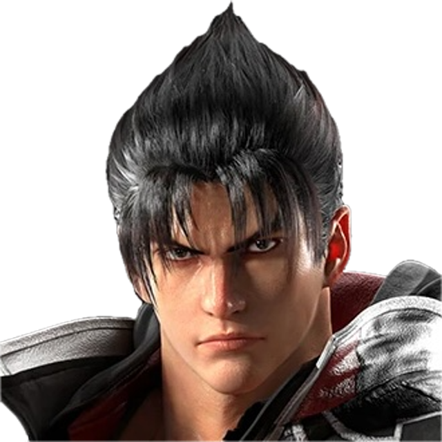

+ Kaikki hahmot P07Valmentajaprofiili
erkka
Jin · erkkas
Replay
Hahmot
Kazuya, Paul, Yoshimitsu, Armor King, Heihachi, Jin, King, Devil Jin, Bryan, Kuma, Panda, Claudio, Law, Jack-8, Fahkumram, Eddy, Lee, Feng, Clive, Bob
Kokemus
Tekken 7 ja Tekken 8 yht. yli 3400 tuntia
Erikoisosaaminen
Korean Backdash, useat eri hahmot yms.
Valmennustyyli
Chill, mukautuva, käydään läpi Tekkenin perusteet ja lähetään siitä.
Saatavuus
Hyvä, iltaisin yleisimmin paikalla.
Pelaajana
Fun enjoyer
Ota yhteyttä Discordissa
erkkas & erkka